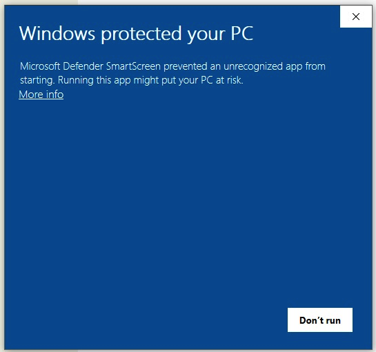

4. Downloading Different Types of Spatial Data and Making Maps
A typical GIS project involves working with multiple types of spatial layers overlaid on each other using a common coordinate system. Some of the layers may be vectors while others may be rasters. An important objective of this lab is to help you develop the ability to visually recognize and distinguish between popular GIS raster and vector data products such as shapefiles, orthophotos, DEMs, satellite imagery, and WMS and WFC layers. Additionally, the lab seeks to help you do the following:
develop basic file management skills necessary to deal with the large number of files that are typically needed for a GIS project.
become comfortable with loading multiple map layers into QGIS and rearranging the layers to suit your information needs.
become comfortable interpreting details on various types of spatial data.
develop cartographic skills needed for effective presentation of multiple map layers.
The lab is divided into seven sections.
In Section 1 of the lab, you will download shapefile from the Internet and then upload them to ArcGIS Online or QGIS Cloud for sharing with your colleagues who have access to browsers, but not to GIS software.
In Section 2 of the lab, you will display shapefiles in QGIS and create a professional quality involving multiple layers.
In Section 4, you will download and display an orthophoto and create a professional quality map using QGIS.
In Section 5, you will load multiple bands of satellite imagery into QGIS and then create maps using different band combinations.
In Section 6, you will load multiple web map layers into QGIS.
In Section 7, you will display different band combinations of Landsat 8 satellite imagery using a free online platform called Landsat Explorer. Landsat Explorer manages the satellite imagery, so users only have to concentrate on manipulating the data.
4.1. Assembling Shapefiles & Uploading to ArcGIS Online
You work for an environmental monitoring company conducting a project in Wayne County, Michigan. As the GIS expert on the project, you are asked to assemble several shapefiles pertaining to the geographic extent of the study area. Download the shapefiles from the Michigan CGI archived GIS and then upload them to ArcGIS Online so they can be viewed by all members of the project team using a browser. Follow the steps below to complete this section of the lab.
Download Data
Create a folder on your computer to store all the files that you plan to download.
Click on the links below and download datasets from the archived Michigan CGI website for Wayne County (Note: If you wish, you can choose to work with a different county). Although the Michigan CGI website is an archived site, I use it because of the ease in downloading county level data. The State of Michigan has a newer open data portal for downloading GIS data. You can visit it at this link
Wetlands (Scroll down to National Wetlands Inventory)
Political Framework including school districts and urban areas
Bedrock Geology
(Note 1: A bedrock geology layer is not available for each county. However, you can clip the Michigan-wide bedrock layer to the extent of the county you selected. The clip tool is found by clicking on Analysis | Tools | Toolboxes| Analysis Tools | Extract | Clip. To use it, first download the Michigan bedrock geology layer. Next, download a layer of the county you selected. Unzip both layers and note their path. In the Clip tool dialog, the Input layer is the Michigan-wide bedrock geology layer while the Clip Features layer is the county layer.
Note 2. Some of the layers that you download are .exe files. To uncompress these files in Windows, double click the file. This will open a dialog similar to the one below. Click on More Info then click on Run Anyway since you know the source of these files. When the dialog opens, click on browse and set a path for the downloaded files. A new folder will be created with the downloaded files.
After unzipping the files, you will need to zip them before loading to ArcGIS Online. To zip these click, right click on the folder name and select Send To | Compressed.
If you encounter problems downloading from the Michigan CGI site, you can download layers below for Wayne County, Michigan that I assembled for this tutorial.
After downloading the zipped files to your desktop, follow these instructions to upload the shapefiles to ArcGIS Online. This is an important skill to master as often we have to share out datasets with colleagues or others who may not have access to GIS desktop software. ArcGIS Online and QGIS Cloud allow users to view the map layers using their browsers.
After uploading the shapefiles, save your web map in ArcGIS Online. Next, edit the names of the layers to make them more user friendly to the readers. When you are done, save the map again. Next, click on the Share button and share the web map with the public. Copy the URL of the web map and submit it as proof that you completed this section of the assignment.
4.2. Displaying Multiple Shapefiles in QGIS & Making a Map
Return to the folder where you download the original files.
Unzip the layers to that folder, as shown below.
Load the shapefiles into QGIS by clicking on Layer | Add Layer | Add Vector Layer, as shown below.

After the layers are loaded, right click on the name of each shapefiles and open the attribute tables of the map layers. Try to understand the data they contain.
Make a Professional Quality Layout
The deliverables for this section of the lab is a professional quality layout using only shapefiles. It is easier if you decide on a theme when creating the layout. For example, I will use my layers try to show water wells in relation to urban areas in Wayne County.
Uncheck all the layers except the shapefile.
Rearrange the order of the shapefiles to suit your preference by dragging them up and down in the Table of Contents. Check to see if some of the layers at the top of the list are hiding others below. If so, further re-arrange the layers. One rule we use is that point features should be at the top of the set, followed by layers that contain line features, then those that contain area features.
Change the color of the layers. To do so, double click on the map icons of each layer, then go to Symbology and change the color to a color that you like.
Experiment with happens when you click on “Fill” versus when you click on “Simple Fill”. You may find yourself using Simple Fill more often.
You may want to use no fill color for some of the layers, relying on the outline to provide the color. This will allow you to see right through the layer to other layers below.
Change Stroke or line widths to show emphasis.
Double click on the name of the layer, then go to Source and from there you can change the layer name.
My final map appears as shown below.
Go to the Composer and create the final map.

Click on Layout | Export as Image. Select a path and a name for the exported image. Once you are satisfied with the map, you can export it PNG format. The image can be uploaded to Canvas Dropbox.
4.3. Display a DEM in QGIS and Create a Map
Visit the Michigan CGI archived GIS website and download a Digital Elevation Model for the county of your choice. If you are downloading data for Wayne County, you can download the DEM at this link.
Unzip the file you downloaded.
Start a new instance of QGIS then click on Layers | Add Raster Layer. Navigate to the folder where the DEM is stored, e.g, C:/Wayne_dem24_30m/Wayne/Topography/dem/.
Select the file named w001001.adf. Make sure it is the adf file with the larger file size.
If the DEM is loaded and doesn’t show up, simply right click on it and select Zoom to Layer.

The numbers below the name of the DEM in the Table of Content refer to elevation in ft. If you click on the Identify button then click anywhere on the map, it will return the elevation at that location.
To change the color of the DEM, double click on its name in the Table of Content and select Symbology. Change the Render Type from SingleBand Gray to SingleBand Psuedocolor.
Select a color ramp that suits your taste. Make sure the color ramp does justice in showing the subtle variations in elevation.
You can also click on the Classify button and experiment with the impact that different classifications methods have on the visual appearance of the DEM.

Below is an example of a DEM map that I created for Oakland County.
4.4. Display and Map PFAS Sample Points for Wayne County
In this section of the lab, you will download a csv file that contains PFAS sample points for the State of Michigan. PFAS are man-made chemicals that do not break down, so they persist in the environment and may be found in the blood of people.
After downloading the csv file, you will display the points in shapefile format. Next, you will clip the Michigan-wide PFAS layer to the extent of Wayne County and create a map showing PFAS points only for Wayne County. Follow the steps below to create this map.
Download the dataset here and unzip it. After unzipping the file, you will notice that it contains a shapefile for Wayne County and a CSV file with the PFAS sample data including the coordinates where the samples were taken.
Open QGIS and load both the Wayne County shapefile into the software.
Now, add the PFAS shapefile. To do so, in QGIS, click on Layer | Add Layer | Add Delimited Layer | then navigate to where the PFAS csv file is located. After you load the file, the dialog will fill out automatically, as shown below. Take a moment and study the dialog. Note that the longitude field in your csv file is mapped as longititue and the latitude field named X in the csv file is mapped as latitude in QGIS. Click Add and Close when you are done.
The PFAS points will now be displayed in QGIS, as shown below.
Let’s clip the Michigan-wide PFAS layer to the extent of Wayne County. The clip tool is found by clicking on Vector | Geoprocessing Tools | Clip | Fill out the Clip tool dialog as shown below. The Input layer is the Michigan-wide PFAS layer while the Clip Features layer is the county layer. Click Run.
Create a professional quality layout of the tile. Include north arrows, scalebar and title.
Although not required for this lab, you should be aware that once the location of the sample points are mapped, then PFAS values in the attribute table of the shapefile can be used to create continuous surface maps for different types of PFAS for the entire study area. The mapping process is called spatial interpolation. An example of an interpolated map is shown below.
4.5. Loading and Displaying Landsat Imagery
Visit the Earth Explorer website (https://earthexplorer.usgs.gov/) and download Landsat 8 imagery for an area of interest. If you are not familiar with the downloading process, click on this link for instructions on this process. You can also download a Landsat imagery datset from Canvas.
The Landsat imagery that you download will contains several layers or bands all of which pertain to the same area. After unzipping the data, load the files into QGIS by selecting the desired layers, as shown below.

After the files are loaded, they should appear as shown below. You can uncheck and then recheck each layer to observe it in detail. You can also zoom in and inspect different parts of the imagery.
Click on Raster in the main menu, then select Miscellaneous | Build Virtual Raster. This step will combine the rasters into a single layer. Fill out the dialog that appears.

Select the layers you want to use. I selected bands 1 through 8. Click OK when you are done.
In the main menu, click Run in Background. A new layer called “Virtual” will be created.

Right click on the layer named “Virtual” and select Properties.

8. To generate an image that represents a 5-4-3 band combination, fill out the dialog similar to the illustration below. The key selections are as follows: * Render Type: Multiband Color * Red Band – 5 * Green Band – 4 * Blue Band - 3.

When you are done, click Apply to view the image. Afterwards, click Ok.
As you may be aware, the Landsat-8 5-4-3 band combination is the traditional false color infrared image. It is good for identifying different types of vegetation as well as their health. Healthy vegetation appears bright red. Each shade of red represents a different type of vegetation. From visual inspection, we can detect many shades of red, however, the computer can detect lots more shades.
Now, display an image using a 5-6-4 band combination. This is also a popular band combination for looking at vegetation cover. It contains two infrared bands (bands 5 and 6). Different vegetation types can be clearly defined, appearing as shades of orange and green.
In the 5-6-4 band combination, land/water interface is also very clear and for this reason, this is probably the most common band combination in Landsat 8 for differentiating between land and water. Lakes and ponds of varying sizes can be easily identified. Water appears in shades of dark blue to black. Ice, if present, stands out as a vibrant magenta color.
Display an image using a 7-6-4 band combination. This combination is useful for visualizing urban environments, particularly in situations where haze is an issue.
4.6. Loading and Displaying a WMS Layer
To Add a WMS Layer, do the following:
In QGIS, click on Layer | Add WMS/WMTS Layer.
Select “New” in the Data Source Manager dialog box.

In the ‘Create a new WMS connection’ dialog, enter a name for the conection and the appropriate URL (e.g. https://mrdata.usgs.gov/services/active-mines?version=1.3.0)

Select OK.
In the Server Connection dialog, select “Connect” and then “Add”. THe WMS layer should now be added.

Select Close.
4.7. Loading and Displaying an ArcGIS REST Service Layer
To Add an ArcGIS Server Layer to QGIS, do the following:
In QGIS, click on Layer | Add ArcGIS Rest Server Layer.
Select “New” in the Data Source Manager dialog box.
In the ‘Create a new ArcGIS Rest Server connection’ dialog, enter a name for the conection (e.g., NAIP Imagery), and the appropriate URL (e.g. https://gis.apfo.usda.gov/arcgis/rest/services/NAIP/USDA_CONUS_PRIME/ImageServer?)
Select OK.
In the Server Connection dialog, select “Connect”.
When the NAIP Imagery connection appears, expand it then select the web map layer. Click “Add”. The NAIP imagery layer should now be added. Select Close.
The NAIP imagery should now appear in the map area of QGIS.

For more information, please view this YouTube Video.
4.8. Landsat Explorer
ESRI has a web mapping application called Landsat Explorer that can be used to quickly create Color Composites. With this application all the bands are preloaded, so there is no need to download data.
Open Landsat Explorer and locate San Francisco.
Display Landsat imagery using a 5-4-3 combination. Comment on vegetation patterns you notice in the imagery. Zoom in to see patterns clearer.
Display Landsat imagery using a 7-6-4 combination. Comment on how well you can detect urbanized areas in this imagery, particularly when you zoom in.
What is NDVI? (See Module 2.7). Display San Francisco using the NDVI index (Tip: use “Vegetation Index”. Also, make sure you click on the question mark next to this renderer to learn more about it).
Where in the San Francisco region would you find areas that have moderate NDVIs (between 0.2 to 0.3) and high NDVIs (0.6 to 0.9).

4.9. Summary of Deliverables
A professional quality map consisting of three or four vector layers showing the relationship between bedrock geology, water wells, and urban areas.
A professional quality map showing the Digital Elevation Model you downloaded.
Screenshots showing the satellite imagery you downloaded displayed in the following band combinations: 5-4-3; 5-6-4 and 7-6-4.
A short write up-of the usefulness of the different band combinations that you displayed.
A professional quality map showing either the orthophoto tile or tiles you downloaded.
A professional quality map showing mines in the USA based on web services data that you accessed.
Screenshots of satellite imagery band combinations that you generated using Landsat Pro and associated comments.